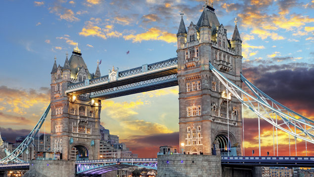
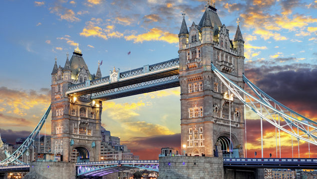
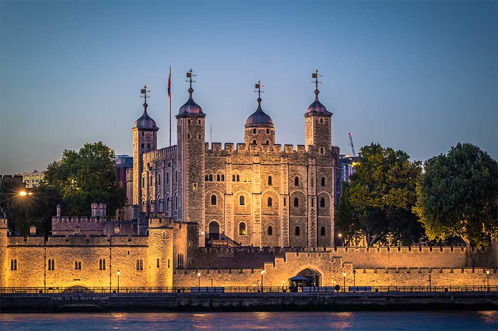
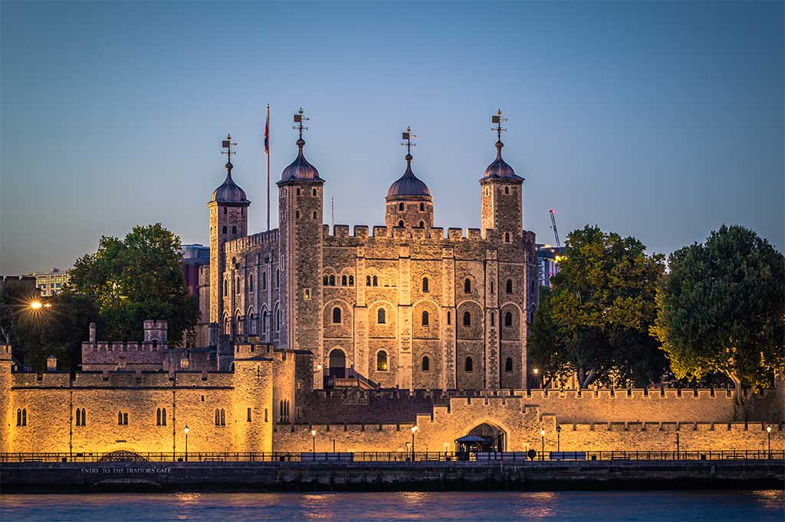

Londres
Londres (em inglês: London, AFI: [ˈlʌndən]) é a capital da Inglaterra e do Reino Unido. Por dois milênios, foi um grande povoado e sua história remonta à sua fundação pelos romanos, quando foi nomeada Londínio. O centro de Londres, a antiga City of London, também conhecida como The Square Mile ("a milha quadrada") ou The City, mantém suas fronteiras medievais. Pelo menos desde o século XIX, o nome "Londres" se refere à metrópole desenvolvida em torno desse núcleo. Hoje, a maior parte dessa conurbação constitui a região da Grande Londres, cuja área administrativa tem seu próprio prefeito eleito e assembleia.
Londres é uma importante cidade global (ao lado de Nova Iorque, Tóquio e Paris) e é um dos maiores, mais importantes e influentes centros financeiros do mundo. O centro de Londres abriga a sede de mais da metade das 100 melhores companhias do Reino Unido (o índice FTSE 100) e mais de 100 das 500 maiores da Europa. Londres possui forte influência na política, finanças, educação, entretenimento, mídia, moda, artes e cultura em geral, o que contribui para a sua posição global. É um importante destino turístico para visitantes nacionais e estrangeiros. Londres sediou os Jogos Olímpicos de Verão de 1908, 1948 e 2012.
 
